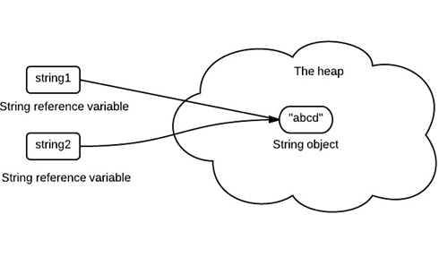

为什么Java中的String设计成不可变的
原文出处：https://www.programcreek.com/2013/04/why-string-is-immutable-in-java/
在Java中String类是不可变的(final)。简单来说，一个不可变的类就意味着他的实例是不可修改的，实例的所有信息都是在实例创建的时候被初始化并且不可被修改。不可变类的设计有很多优点。这篇博文主要从内存，同步和数据结构的角度来具体说明这种不可变的概念。
String Pool 的需要
String Pool（String intern pool）是在方法区的一块特殊存储区域。当一个String被创建时如果发现当前String已经存在于String Pool，则会返回一个已存在String的引用而不会新建一个对象。以下代码只会创建一个String对象在堆内存中：
1 | String string1 = "abcd"; |
下图是创建的过程：
假设一个String是可变的，改变了一个引用指向的String会导致其他引用得到错误的值。
缓存 Hash Code
在Java中，对于String的Hash Code使用是非常频繁的，例如在HashMap或HashSet中。将String设计成不可变可以保证他的Hash Code始终一致，这样Hash Code就可以被缓存并且不用担心变化。这就意味着，不需要在每次使用String的时候都去计算他的Hash Code，这也使得程序运行更加高效。
简化使用
为了更加详细的阐述，我们考虑以下程序：
1 | HashSet<String> set = new HashSet<String>(); |
在这个例子中，如果String是可变的，那么就会违背set的设计初衷（set包含不重复的元素）。当然上面的例子只是为了论证，实际上String类中没有value这个字段。我们在使用set的时候同样要注意这个问题，如果set中的元素会发生变化，那么就有可能违背set的不重复设定。
安全
String在很多Java类中被广泛用作参数，例如网络连接，文件打开等。假设String是可变的，一个连接或者一个文件就可能被改变，这会导致严重的安全隐患。某个方法以为正在连接到一个机器，实际并没有。
1 | boolean connect(String s){ |
因为不可变对象不能被改变，他们还可以在多线程中被自由的共享，这就消除了对象同步的需求。
总结
总的来说，String被设计成不可变的出发点是效率和安全。这也是不可变类在很多情况下被优先使用的原因。